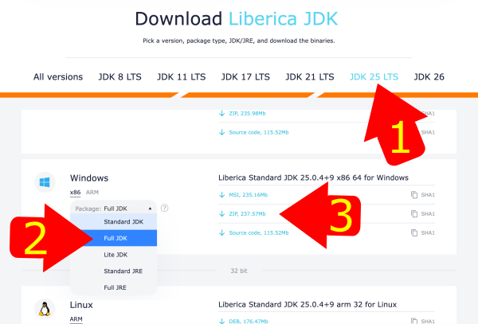
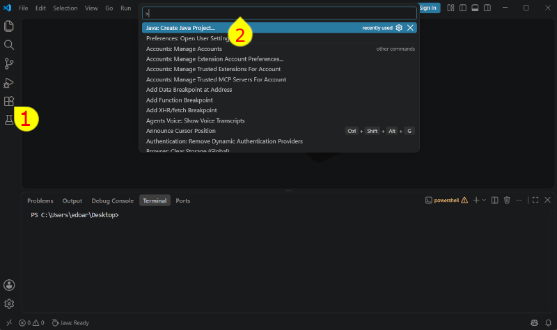
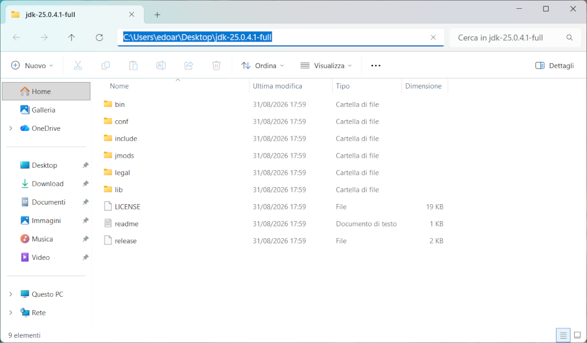
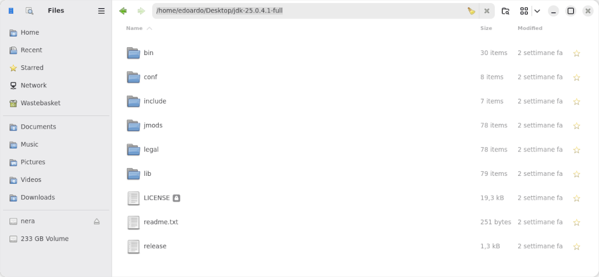
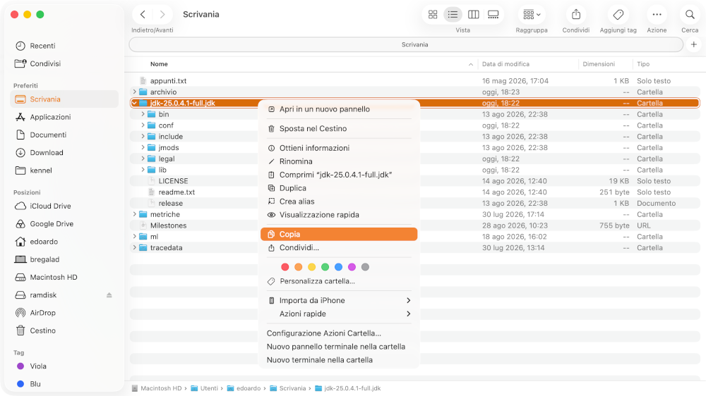
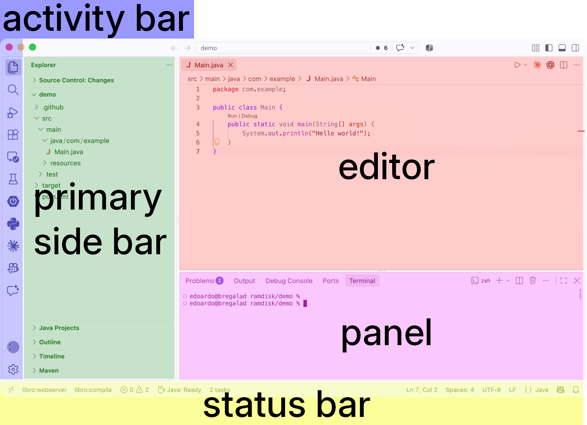
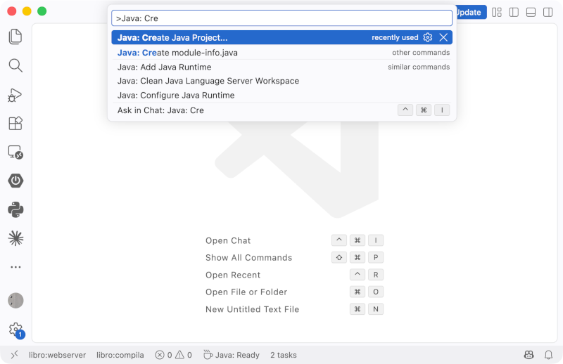
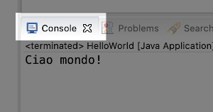

Gli strumenti essenziali
Per poter sviluppare programmi ci servono degli strumenti, nel caso di quelli che vogliamo sviluppare noi abbiamo bisogno di tre cose: il "Java Development Kit", una libreria per sviluppare applicazioni con interfaccia grafica e un ambiente di sviluppo (una specie di editor di testo più sofisticato).
Java Development Kit
Il "Kit di sviluppo Java" è più conosciuto come JDK, e contiene un lungo elenco di programmi utilizzati dagli sviluppatori per creare e gestire programmi con java. Noi useremo soltanto alcuni di questi strumenti ma il JDK va comunque installato.
Java ha un meccanismo predefinito per le versioni e dovremo farci attenzione: alcune versioni sono marcate come LTS cioè "Long Term Support" (versioni con lungo supporto) e scaricabili a lungo, fanno parte di questo gruppo la versione 21 e 25, altre versioni come 20-22-23-24-26 sono soltanto intermedie quindi quando ne esce una versione successiva la precedente non è più facile da trovare e non viene più corretta.
In realtà non va installato "il" JDK ma "un" JDK perché ce ne sono molte versioni e di diversi produttori.
Per quanto riguarda la versione per noi sarebbe sufficiente una qualsiasi dalla 11 in poi, bisogna anche tener conto del fatto che chi ha sistemi funzionanti normalmente usa (ma non è un obbligo) una delle versioni chiamate "LTS", l'ultima di questo tipo è la versione 25 e scaricheremo questa.
Per via della licenza Open del JDK si può scegliere anche da quale produttore scaricare il JDK: funzionano tutti fondamentalmente a pagamento (con garanzie aggiuntive in questi casi). Ad esempio fanno una versione del JDK: Adoptium Working Group, Oracle, Amazon BellSoft e anche Microsoft.
Libreria grafica
Questa non è sempre necessaria ma noi la useremo perché vogliamo scrivere applicazioni con una interfaccia grafica abbastanza versatile, ne useremo una sviluppata sempre dallo stesso gruppo che sviluppa java e che si chiama JavaFX, fino poco tempo fa era inclusa nel JDK standard ma adesso non lo è più.
Ambiente di sviluppo
Questi (tutt'altro che piccoli) normalmente vengono chiamati IDE (Integrated Development Environment) e ci aiutano molto nella scrittura dei programmi: in teoria non necessari ma in pratica sono indispensabili. Ne esistono molti ma per Java i più usati sono Eclipse, NetBeans e Intellij IDEA. I primi due sono Open Source e il terzo no ma è molto usato.
Il nostro ambiente
Va bene una qualsiasi combinazione di JDK+IDE+JavaFX che consenta di sviluppare applicazioni, qui riportiamo la soluzione più semplice che usa tutto software Open: Visual Studio Code come IDE e il JDK di BellSoft (perché include già JavaFX e ci risparmia un po' di lavoro e di seccature) come JDK.
Installazione
Attenzione: le indicazioni che verranno date qui sotto vanno seguite molto scrupolosamente, prima di prendere una versione diversa da quella specificate è meglio informarsi bene perché potrebbe succedere che alcune combinazioni di IDE/JDK non siano del tutto compatibili.
Installazione ambiente di sviluppo
- Scaricare Visual Studio Code
- Andare alla pagina dei download di Visual Studio Code va bene scaricare l'ultima versione
- È spesso più pratico non scaricare l'installer ma il file da scompattare,
fate però attenzione all'architettura (x86/Intel o Arm64/Apple silicon):
- Per Linux: da terminale usate il comando `uname -m` che vi darà l'indicazione necessaria
- Per macOS: dal menu mela in alto a sinistra fate click su "Informazioni su questo Mac", se come Chip trovate qualcosa che inizia con "Apple M..." scaricate Applesilicon altrimenti Intel chip
- Per Windows scaricate x86
- Scompattare il file .zip appena scaricato sulla scrivania
- Scaricare e installare il JDK versione 25 Liberica dal sito di Bell Soft:
- dalla pagina dei download fare click su "JDK 25 LTS"
- scorrere in basso fino alla sezione del vostro sistema operativo e fate click sulla vostra architettura (qui chiamano "ARM" e "x86", vale il discorso di prima per capire quale è la vostra architettura)
- come "Package" scegliere "Full JDK"
FIXME: immagine errata
- scaricare lo zip
- scompattare il file zip sulla scrivania
- Arrivati a questo punto sulla scrivania devono esserci due cartelle: una con VS Code (chiamata "???") e una del JDK (con un nome tipo "jdk-25.0.5-full").
Configurare VS Code (il programma si chiama "code" nella cartella scompattata) per configurarlo.

- appena avviato click sul pulsante a destra con le estensioni (numero 1 della figura) e cercare scrivendo nella casella in alto "java", nell'elenco tra le prime estensioni compare "Extension Pack for Java" di Microsoft, da installare questa
- quando l'estensione parte chiede di installare un JDK ma noi lo abbiamo già preso e vogliamo usare il nostro quindi ignoriamo la richiesta
- il JDK va impostato comepre preferenza in VS Code: premi CTRL+SHIFT+P (o COMMAND+SHIFT+P sul mac) e compare in alto una casella che si chiama command palette (il 2 nella figura) e che useremo spesso per dare velocemente dei comandi a vscode, nella palette scrivi "user settings" e dalle voci che compaiono sotto fai click su "Preferences: Open User Settings (JSON)", dovrebbe comparire un file con soltanto "{}" visto che VS Code è stato appena installato
- Tra le due graffe va inserito il pezzo qui sotto
"java.configuration.runtimes": [ { "name": "JavaSE-25", "path": "INSERISCI_QUI_IL_PERCORSO", "default": true } ]Al posto di INSERISCI_QUI_IL_PERCORSO va inserito il percorso del JDK che abbiamo scaricato ma con un minimo di attenzione: la cartella di cui ci interessa il percorso è quella che contine bin, conf e altre, a seconda del sistema operativo possono le modalità per copiare il percorso potrebbero essere:il file che si ottiene dovrebbe essere una cosa del tipo:
Fare click sulla barra in alto e poi copiare il percorso, attenzione che il percorso contiene dei "\" che vanno sostituiti con "\\" (ad esempio "C:\\Users\\edoar\\Desktop\\jdk-25.0.4-full.jdk")
click sulla barra del percorso in alto
click con il destro sulla cartella e poi "copia"{ "java.configuration.runtimes": [ { "name": "JavaSE-25", "path": "/Users/nome/Desktop/jdk-25.0.4-full.jdk", "default": true } ] } - chiudi il pannello, il contenuto viene salvato automaticamente
Utilizzare l'ambiente di sviluppo
Gli Integrated Development Environment sono strumenti molto articolati che aiutano gli sviluppatori nello svolgere moltissimi compiti, a seconda dei plugin installati la finestra potrebbe visualizzare informazioni diverse in praticamente qualsiasi parte della finestra, Adesso creiamo il primo progetto con il primo file java, il più semplice possibile: il classico "Hello World!"
come spesso succede quelloo che veidamo è solo uno dei modi possibili ma è anche uno dei più usati.
VS Code
La finestra di VSCode

La struttura generale della finestra dell'ambiente di sviluppo Visual Studio Code è configurabile e può cambiare a seconda dei plugin installati e delle nostre preferenze, quelle che vediamo sono le aree principali.
- activity bar
- permette di selezionare l'attività che si sta facendo, se vogliamo lavorare sui file sorgente java, per esempio, dobbiamo selezionare l'icona con il simbolo dei due foglietti, il primo in alto (si chiama Explorer)
- primary side bar
- contiene le principali informaizoni per lavorare, se abbiamo scelto l'Explorer nell'activity bar, qui comparirà la struttura del progetto e dei file sorgente, cliccando su un file sorgente java questo si aprirà nell'area degli editor
- editor
- qui troviamo i nostri file sorgente da poter modificare, o le immagini soltanto visualizzate
- panel
- può contenere diverse informazioni, per noi il pannello "Terminal" sarà utile per vedere ad esempio gli errori del nosgtro programma
- status bar
- varia molto a seconda dei plugin installati, da insormzioni molto riassuntive sullo stato del progetto e dell'editor aperto.
Creazione del progetto

Struttiamo un assistente del plugin Java per crere il progetto passando per la Command Palette, su Windows o Linux Ctrl+Shift+P mentre su Mac Cmd+Shift+P "Create Java Project...".
Dal menu che si apre selezionare "Maven create from Archetype" e poi "No archetype"
Quando viene chiesto il "group id" solitamente si usa il proprio dominio scritto al rovescio come per i pacchetti java, ad esempio "it.miaazienda"
Il passo successivo è l'"artifact id" cioè il nome del progetto (che di solito sono una o più parole scritte in minuscolo tutto attaccato).
Ultimo passo è la selezione della cartella in cui creare il file, fatto questo vscode aprirà una finestra e sulla destra si vedrà la cartella selezionata, il caso si voglia vedere soltanto la cartella del progetto (magari per evitare caos) basta andare sul menu "file", fare click su "open folder..." e selezionare la cartella del progetto.
Durante la creazione del progetto oltre che le cartelle viene creato in automatico un pom.xml su cui dobbiamo intervenire: per aprirlo basta farci click e poi cambiare la sezione
<properties>
<maven.compiler.source>17</maven.compiler.source>
<maven.compiler.target>17</maven.compiler.target>
</properties>
in
<properties>
<maven.compiler.release>25</maven.compiler.release>
</properties>
Il primo programma
Classicamente il primo programma che si scrive con ogni linguaggio di programmazione stampa semplicemente il testo "hello world!".
Output su console

Lo strumento che permette di effettuare l'input e l'output testuale si chiama console e prevede l'uso della sola tastiera per inserire i dati e di avere l'output soltanto in formato testo. Come tutti gli altri programmi solitamente gira in una finestra.Nel caso di eclipse la console compare nella parte bassa dello schermo come impostazione predefinita, se non fosse visibile per aprirla bisogna usare il menu /Window/Show View e selezionare la voce Console (se la voce "console" non compare direttamente click su /Window/Show View/Other... e dal gruppo General selezionare la voce Console).
Hello World
Dopo aver creato il progetto bisogna creare una nuova classe, nello svolgere le prossime operazione fai attenzione al Maiuscolo/minuscolo nei nomi degli elementi: apri le cartelle del progetto, diventerà visibile una cartella src fai click con il destro e poi click sul menu contestuale New/class, chiamala CiaoMondo (nel campo Name) e scrivi ciaomondo nel campo Package. A questo punto fai doppio click sulla classe appena creata per aprirla.
Il file "CiaoMondo", conterrà qualche linea di codice che va cancellata e sostituita con il programma qui sotto:
package ciaomondo;
public class CiaoMondo {
public static void main(String[] args) {
System.out.println("Ciao mondo!");
}
}
Per eseguire il programma bisogna fare click con il destro sul programma stesso poi selezionare il menu Run As e poi Java Application. Il risultato compare nel pannello Console.